Documentation
Every feature in RunBud
All 45 features in RunBud 2.0. Pick one on the left to see the screen, where to find it and what it does.
Train
Today
Where: Today tab
The first screen. Shows today's workout from your coach or your own plan, part by part.
- Warm-up, main set, weight room and cool-down
- Log it in one tap when you're done
- A week strip to jump between days
- Eight shortcuts and See everything in RunBud

Train
RunBud Coach
Where: Today › Coach
Builds and adjusts a training plan from your marks, history and how you feel. No AI writes the plan.
- Set your event, goal mark, current best and goal meet
- Mark each weekday as practice, open or off, with minutes, lift days and fixed sessions
- Season phases counted back from your meet, with a lighter week every fourth week
- Pace table for your event, a realistic range for your goal, and what changed this week
- Adapts to check-ins, missed days and fading splits; never overwrites a session you edited or a coach's workout

Train
Plan your week
Where: Log › Plan
Write your own workouts on any day and repeat a week you like.
- Add parts, planned minutes and planned effort
- Copy a week forward
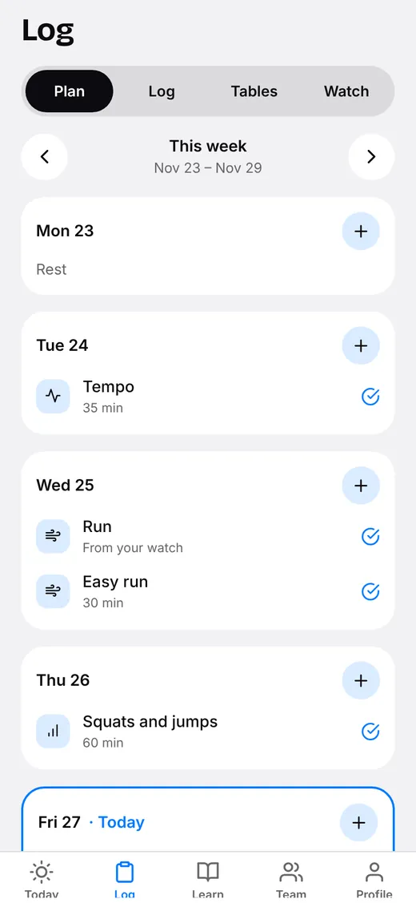
Train
Log a session
Where: Today › Log
Record what you did.
- Minutes and effort from 1 to 10
- Reps and splits, weight-room sets
- Shoes you wore and notes
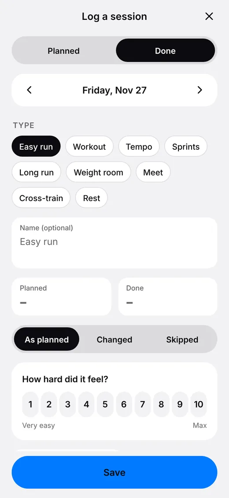
Train
Rep and lap timer
Where: Today › Timer
Time reps and rest at the track.
- Laps, rep stops and rest timing
- Optional rep distance
- Saves splits to your log with an effort rating
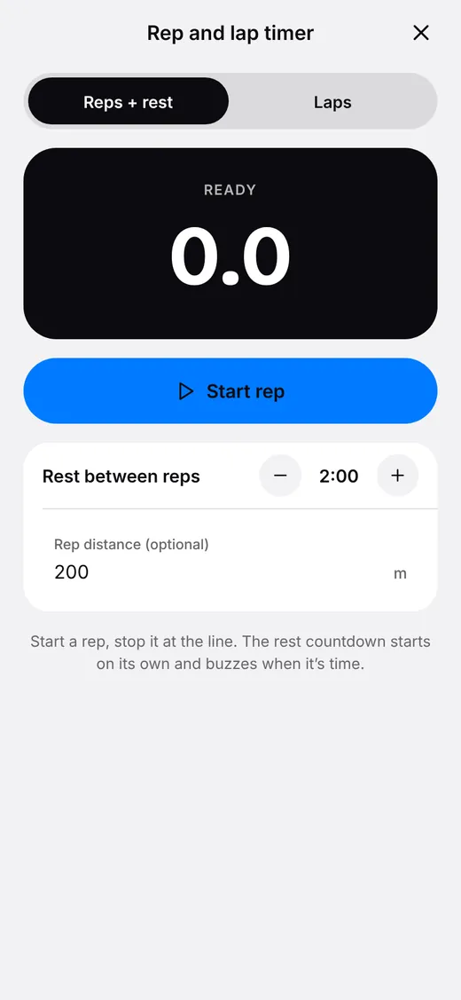
Train
Strength by event
Where: Learn › Strength by event
Weight-room plans matched to your event group.
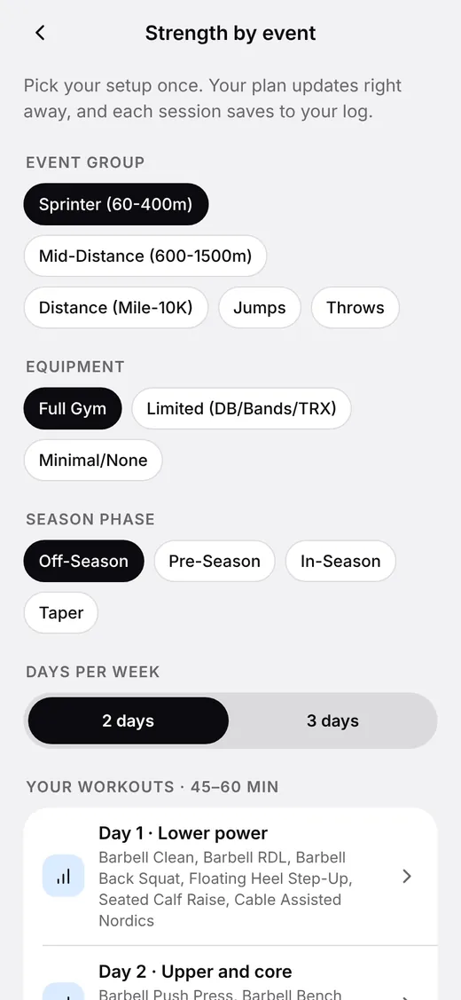
Train
Stretching
Where: Learn › Stretching
Dynamic warm-ups before training and static stretches after.
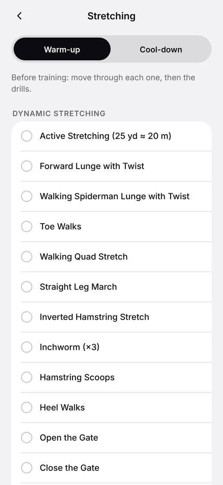
Train
Meets and taper
Where: See everything › Meets and taper
Add meets for a countdown and a taper check on the week before.
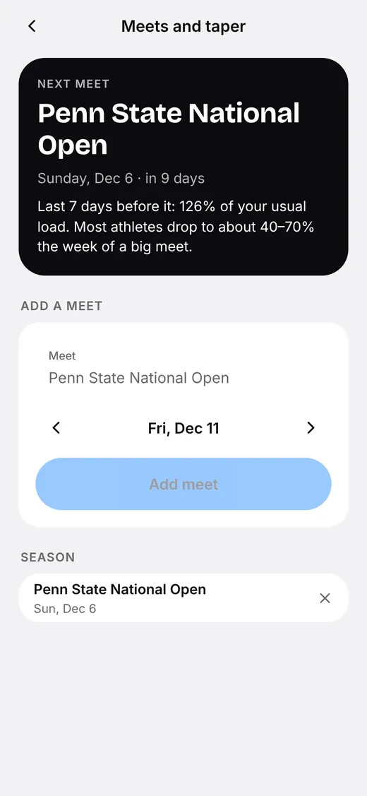
Recover
Daily check-in
Where: Today › Check-in
A quick morning check-in.
- Sleep last night and sleep quality
- Soreness, energy, stress and mood
- Pain (not normal soreness) and where it hurts
- Feeling sick: cold, flu or stomach bug
- Notes
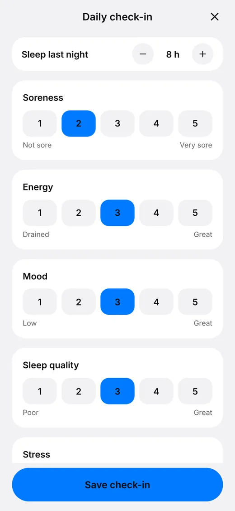
Recover
Readiness
Where: Insights › Readiness
Green, yellow or red, compared with your own normal.
- Uses sleep, HRV, resting heart rate and training load when available
- Shows what to watch today
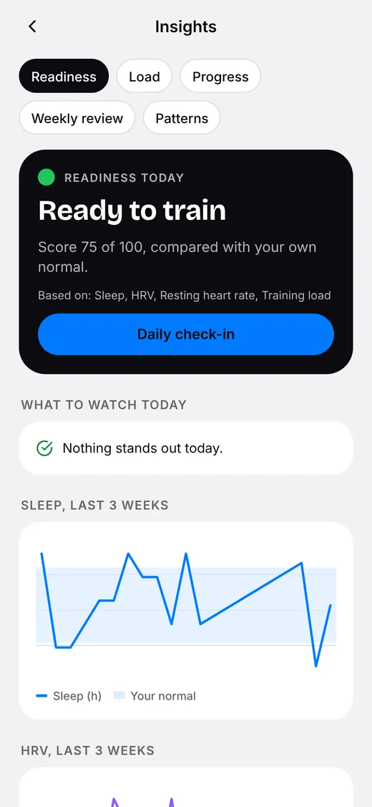
Recover
Injuries and recovery
Where: Learn › Injuries and recovery
15 common track injuries with self-checks and return-to-running guidance.
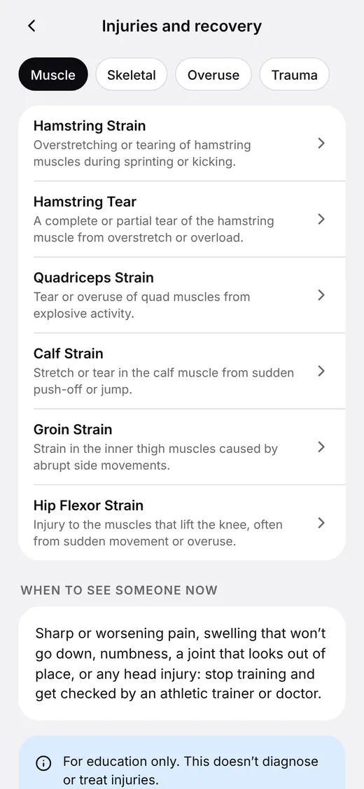
Recover
Sleep calculator
Where: Learn › Sleep
Bedtimes and wake-up times that line up with sleep cycles, plus sleep habits.
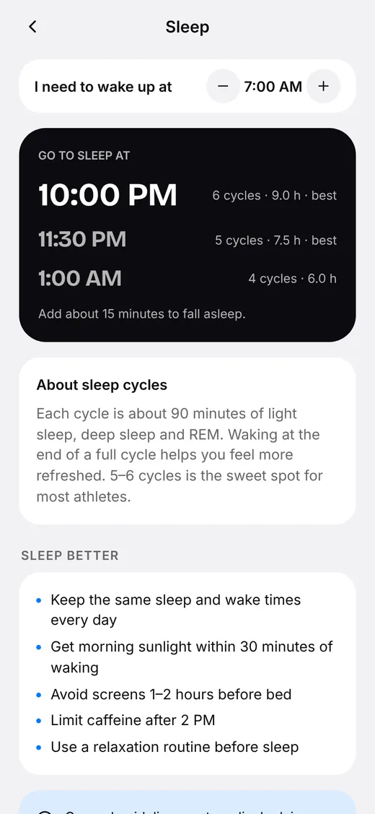
Fuel
Hydration
Where: Today › Water
A daily target, a tracker and your history.
- Quick add: 8 oz, a bottle or 24 oz, and undo
- Electrolyte choices and notes
- Seven-day average against your goal
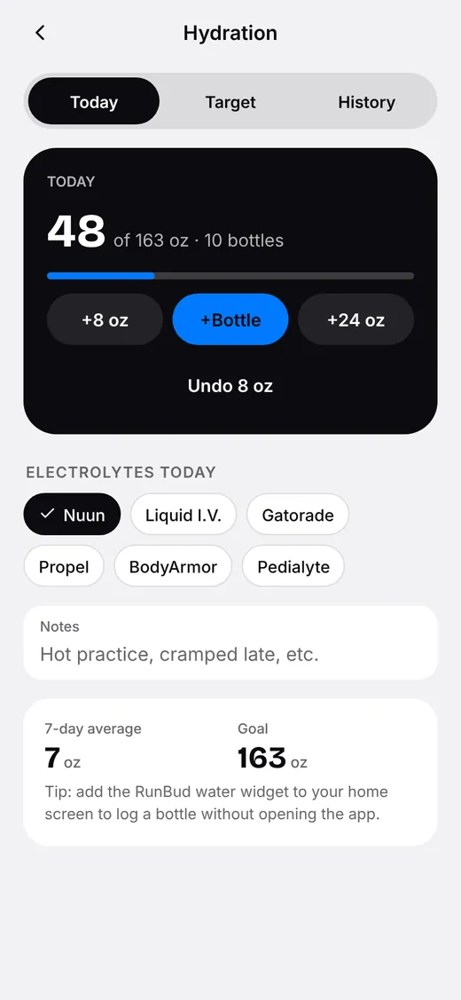
Fuel
Hydration widgets
Where: Home screen and Lock Screen
Log water without opening the app, on iPhone and Android.
- Small, medium and Lock Screen sizes on iPhone
Fuel
Fuel
Where: Learn › Fuel
Everyday meals, race-day fueling and supplements.
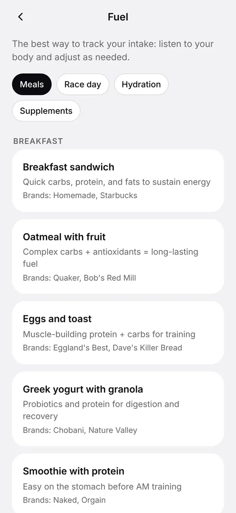
Mind
Mental training
Where: Learn › Mental training
Meditation, visualization, flow state and pre-race routines.
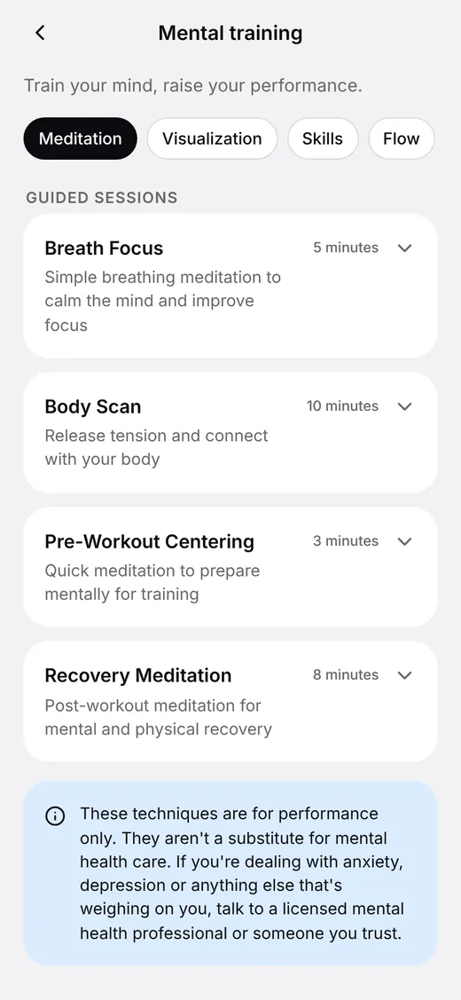
Progress
Insights and graphs
Where: Today › Insights
Readiness, load, progress and patterns.
- Load with fitness (six weeks), fatigue (one week) and form
- Progress on marks, tests and lifts
- Sleep and HRV over the last three weeks
- Patterns in how you feel
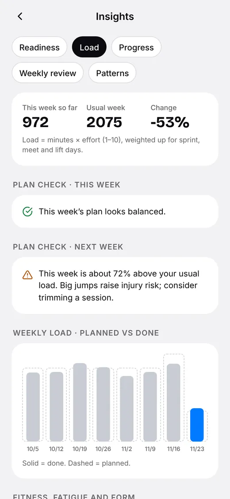
Progress
Weekly review
Where: Insights › Weekly review
This week next to last week.
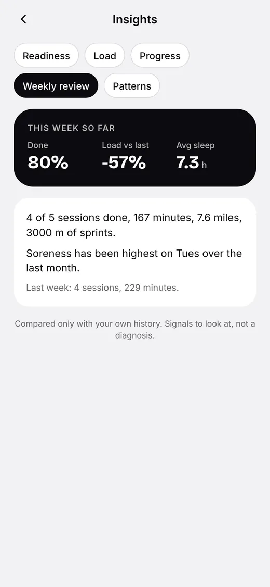
Progress
Results and PRs
Where: Today › Result
Races, time trials and personal bests, which also set RunBud Coach's paces.
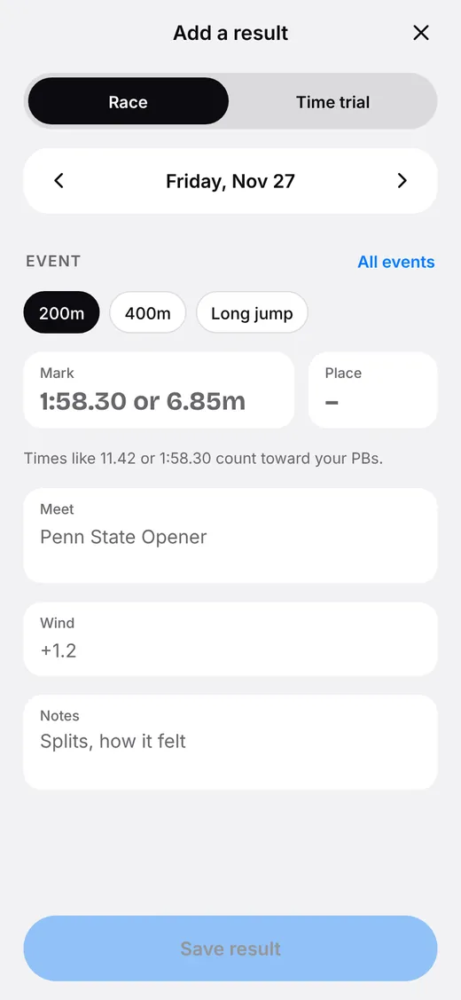
Progress
Tests
Where: See everything › Tests
Flying 30s, jumps and lift tests.
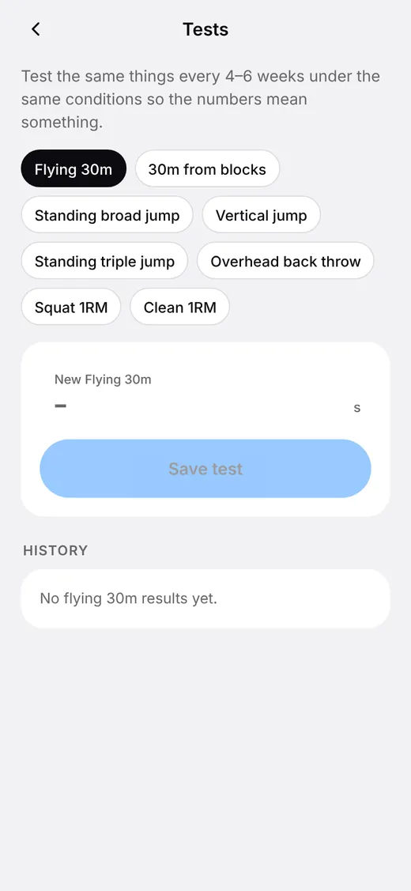
Progress
Tables
Where: Log › Tables
Every number you've logged in sortable tables.
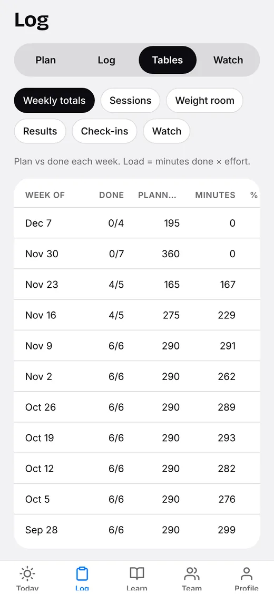
Progress
Watch data
Where: Log › Watch
Reads Apple Health on iPhone and Health Connect on Android.
- Runs and workouts, resting heart rate, HRV, sleep stages, steps, calories and exercise minutes
- Garmin, Coros, Strava and Whoop work when they sync to Health
- Read only: RunBud never writes to Health
- A switch for every metric; watch data is never sent to AI

Teams
Join or create a team
Where: Team tab
Athletes join with an athlete code. Staff join with a staff code. Anyone can create a team and become its head coach.
- Be on more than one team
- Leave a team any time
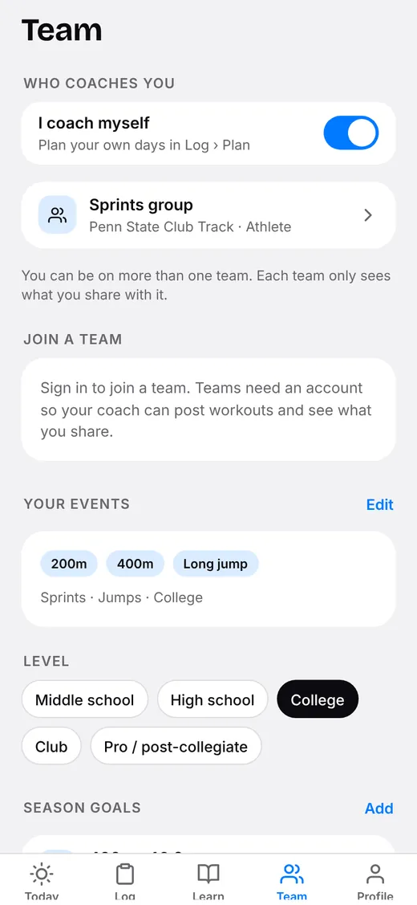
Teams
Sharing controls
Where: Team › your team › Change what I share
Choose, for coaches, athletic trainers and nutritionists separately, whether they see sessions, results, check-ins and watch data.
Teams
Posting workouts
Where: Team › your team › Post a workout
Coaches post by whole team or event group and choose when athletes see it: now, the night before at 8 PM, that morning at 6 AM, or that day at noon.
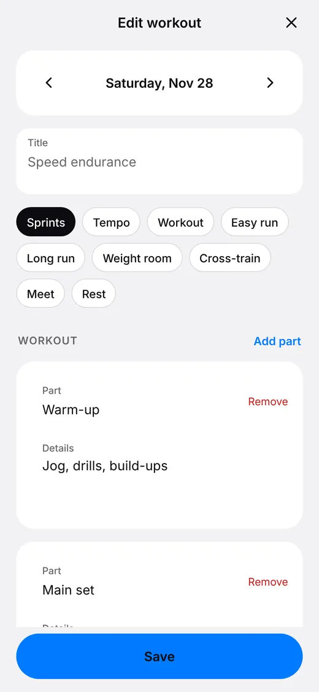
Teams
Roster and athlete detail
Where: Team › your team
Coaches see each athlete's event, check-in, last session and load, with athletes who need attention first. Open an athlete for their week and load against the last four weeks.
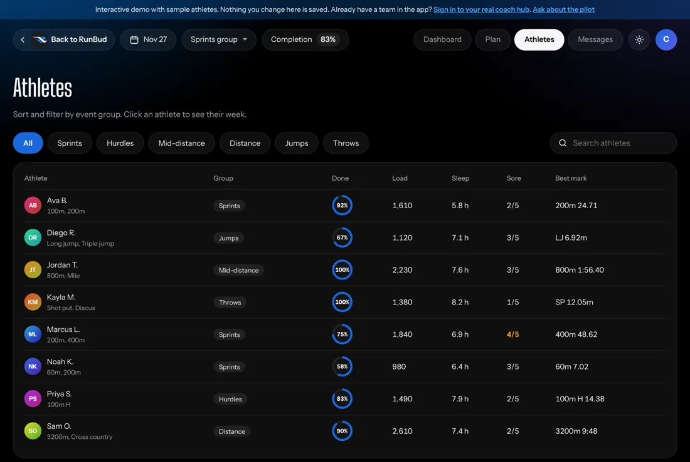
Teams
Coach hub on the web
Where: myrunbud.com/hub.html
The same team on a laptop or iPad: roster, athlete detail, workouts, messages, CSV export and printing.

Teams
I coach myself
Where: Team › I coach myself
Tell RunBud you plan your own training. Turn it off when a coach's plan is your plan.
Teams
Season goals and events
Where: Team › Season goals, Your events
Goal marks next to your bests, and the events and event groups you compete in.
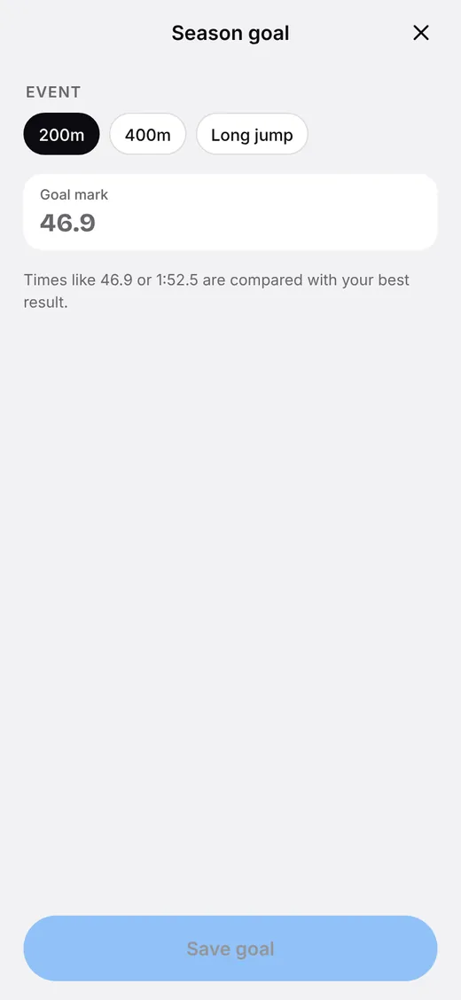
Messages and safety
Team, group and direct chats
Where: Team › your team › Messages
A team chat for everyone, group chats that coaches create, and direct messages between two people on the team.

Messages and safety
Safety rules
Where: Always on
Any chat with a staff member is visible to every staff member. Messages can't be edited or deleted. Photos aren't supported, and phone numbers and emails are blocked.
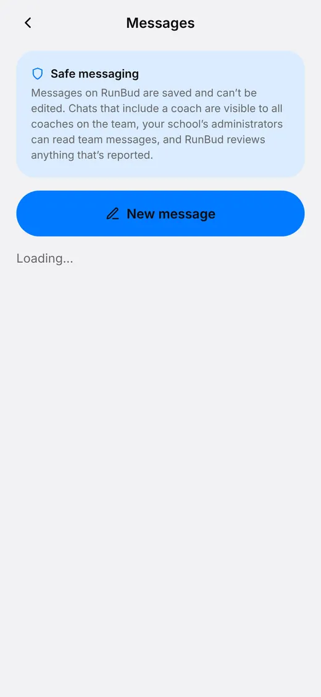
Messages and safety
Report and block
Where: Long-press a message
Report with a reason or block a person. The RunBud team reviews reports within 24 hours.
Schools and administrators
School accounts
Where: Team › School administrators
Create a school, add administrators with an administrator code, and give coaches a link code to connect their teams.
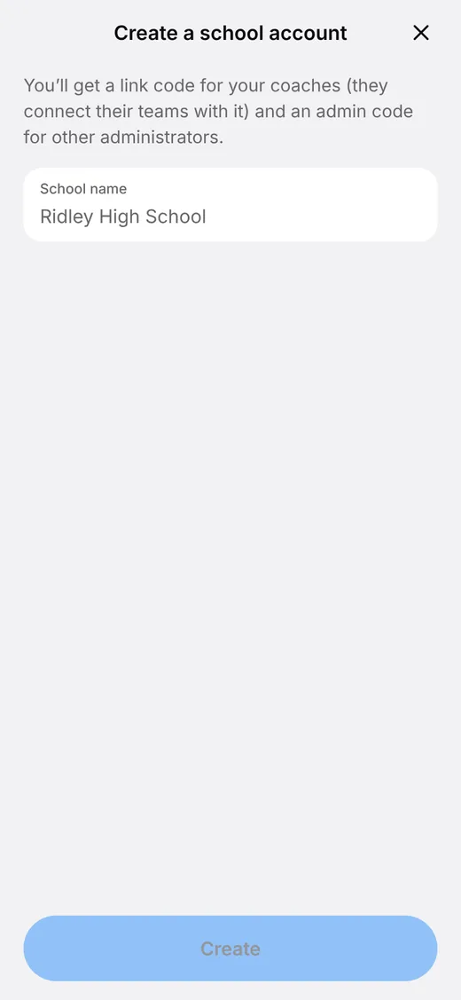
Schools and administrators
Message review
Where: School view, in the app or on the web
Administrators read every message on linked teams and can hide a message, which stays on record. They can't read athletes' private training logs or health data.
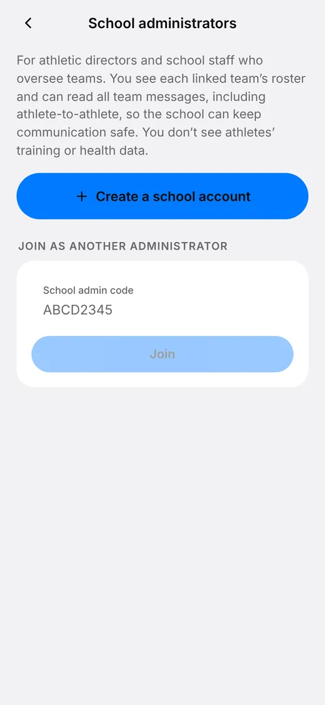
Recruiting
Recruiting guide
Where: See everything › Recruiting guide
Timeline, contacting coaches and visits.

Recruiting
Coach email maker
Where: See everything › Coach email maker
Build a recruiting email step by step.
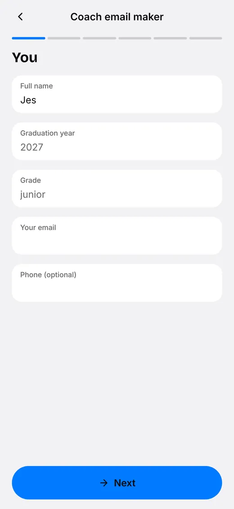
Recruiting
Match schools
Where: See everything › Match schools
Find programs that fit your marks, through Runcruit.
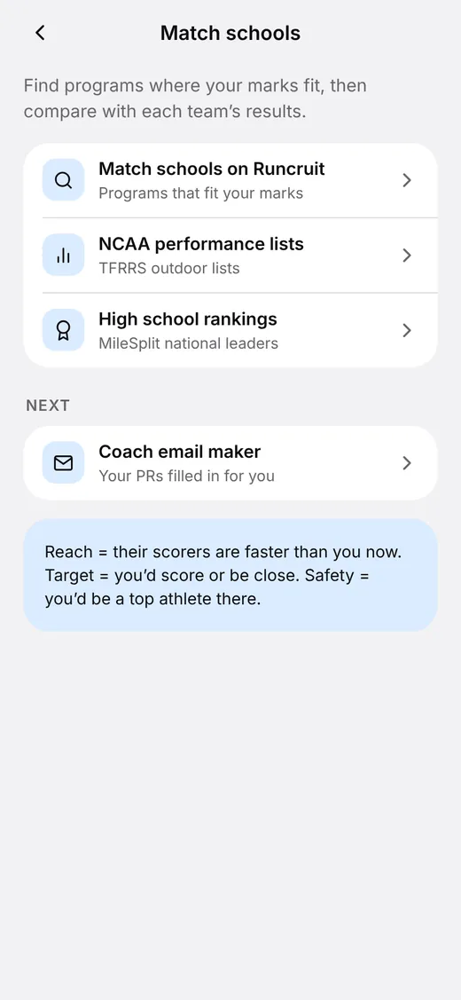
Recruiting
Scholarships
Where: See everything › Scholarships
Athletic, academic and other aid.
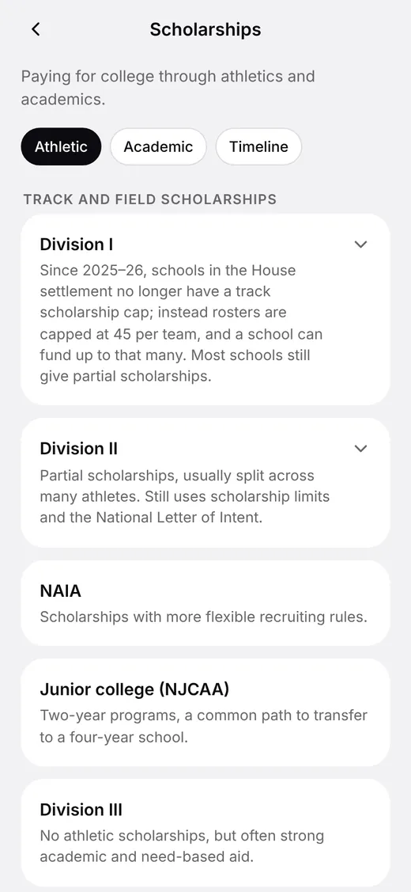
Community
Health forum
Where: See everything › Health forum
Ask athletes, athletic trainers and doctors about pain, fueling or training.
- Agree to the community rules before posting
- Verified doctors, athletic trainers and dietitians carry a badge
- Report posts and block people; the RunBud team reviews reports within 24 hours
You and settings
Profile and settings
Where: Profile tab
Name, units, light or dark look, and the tutorial, which you can skip and replay.

You and settings
Reminders
Where: Profile › Reminders
A daily check-in reminder at the time you choose, and optional water reminders late morning and mid-afternoon.
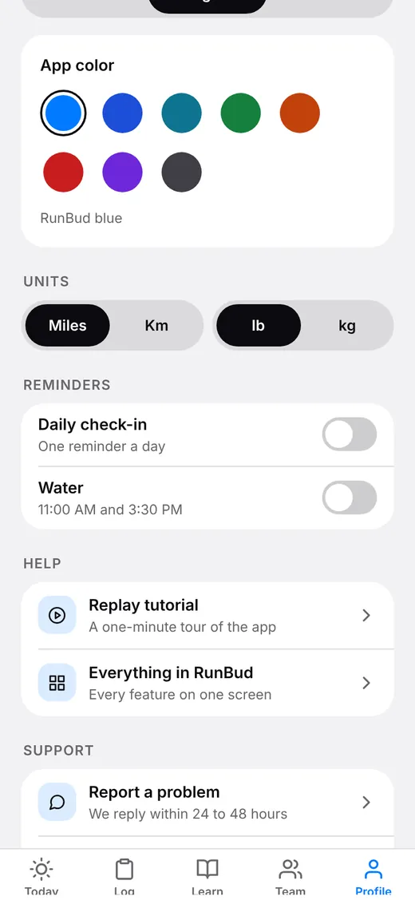
You and settings
Backup and restore
Where: Profile › Backup
While you're signed in, your log backs up to your own account. Restore it on a new phone.
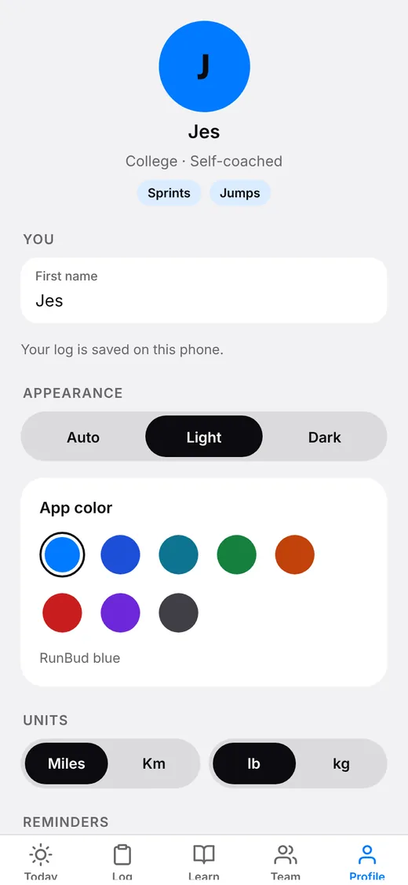
You and settings
Shoes
Where: See everything › Shoes
Mileage on each pair and when to replace them.
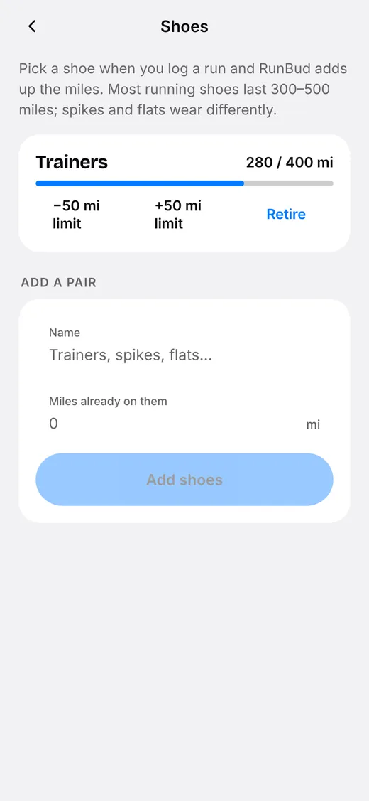
You and settings
Shop
Where: Profile › Shop
Running gear from a coach's store, which helps keep RunBud free.
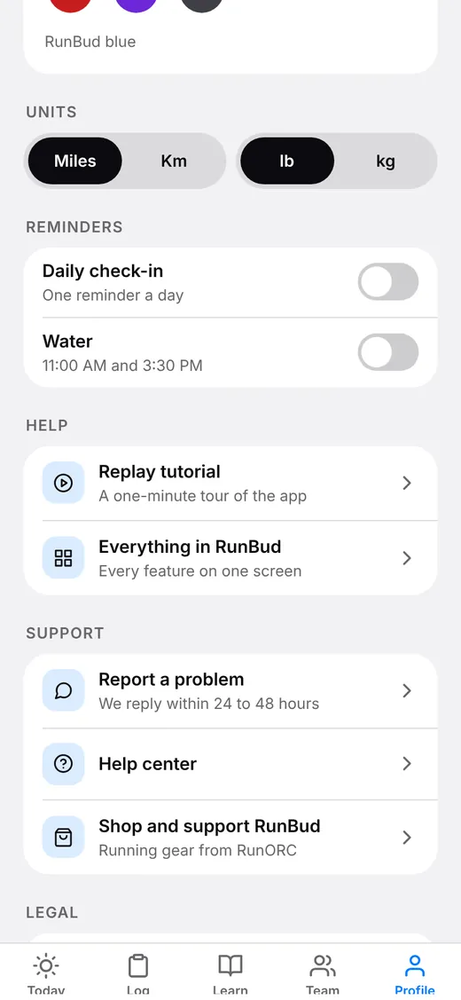
You and settings
Delete your account
Where: Profile › Delete account
Deletes your account, your backup, your team memberships and your forum posts. Also available on the web.
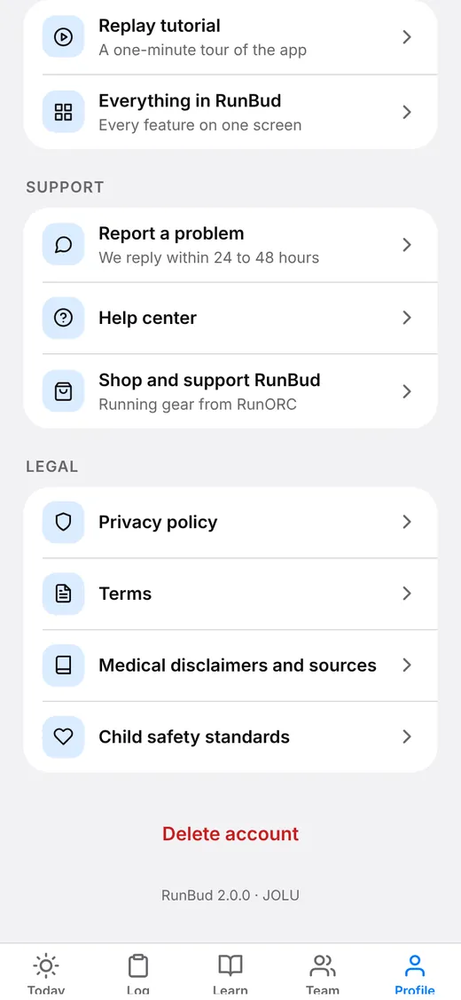